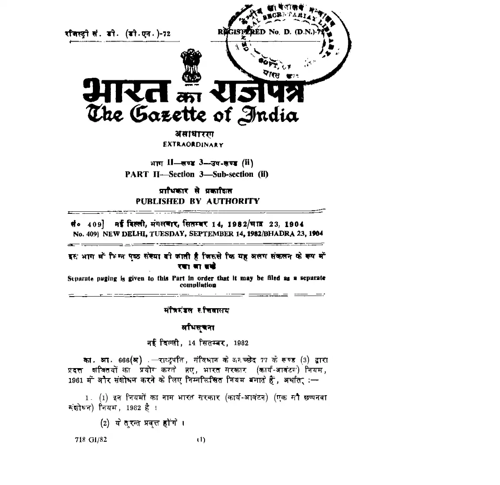
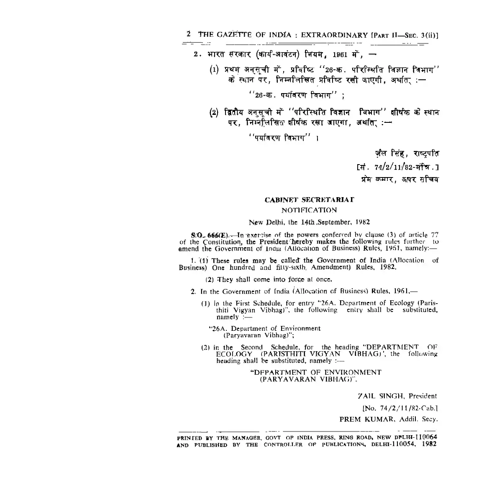

Amendment #156 (S.O. 666(E), 1982)
2 changes: 1 to the First Schedule, 1 to the Second Schedule. 2 applied
What it did to the ministries
- renamedDepartment of Ecology is renamed Department of Environment change 1, 2 · histories: Environment & Climate
The order, page by page
Page 1 of 2

Page 2 of 2

12Schedule 1 › entry 26A
- 26A. Department of Environment
applied at schedule 1 › department 26A in the Rules after #156
Schedule 2 › DEPARTMENT OF ECOLOGY
- *DFPARTMENT OF ENVIRONMENT
applied at schedule 2 › department *DFPARTMENT OF ENVIRONMENT in the Rules after #156
How this document was read
Edits to the reading
| Date | By | Edit | Before → after |
|---|---|---|---|
| 12 November 2026 | claude | word corrected |
From the Government of India (Allocation of Business) Rules, 1961 and their amendments, as published by the Cabinet Secretariat (cabsec.gov.in), read by orgpedia. The readings of the older scanned gazettes have known gaps.